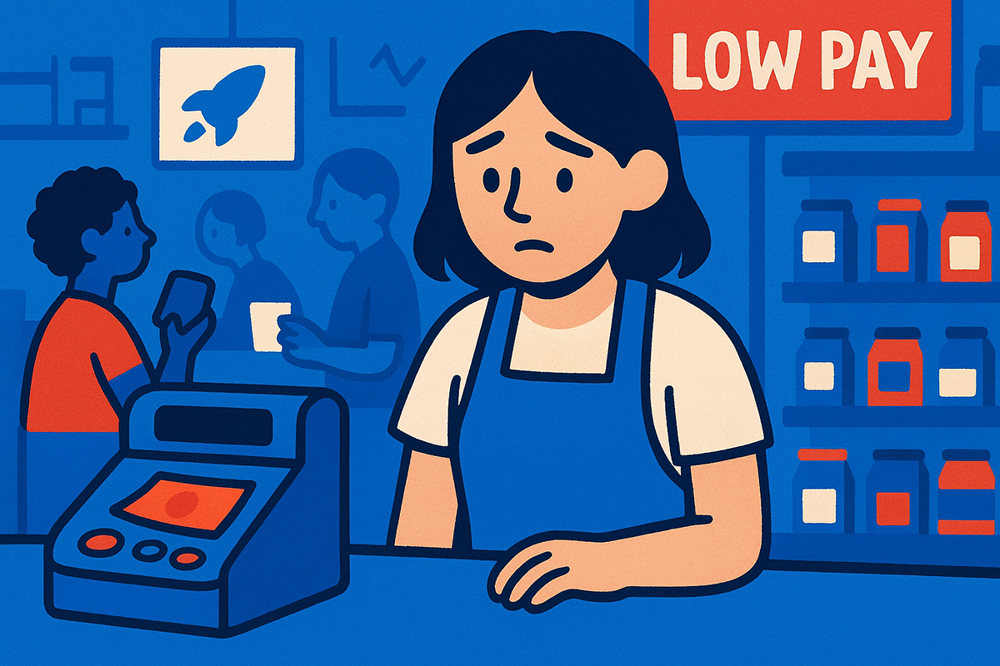
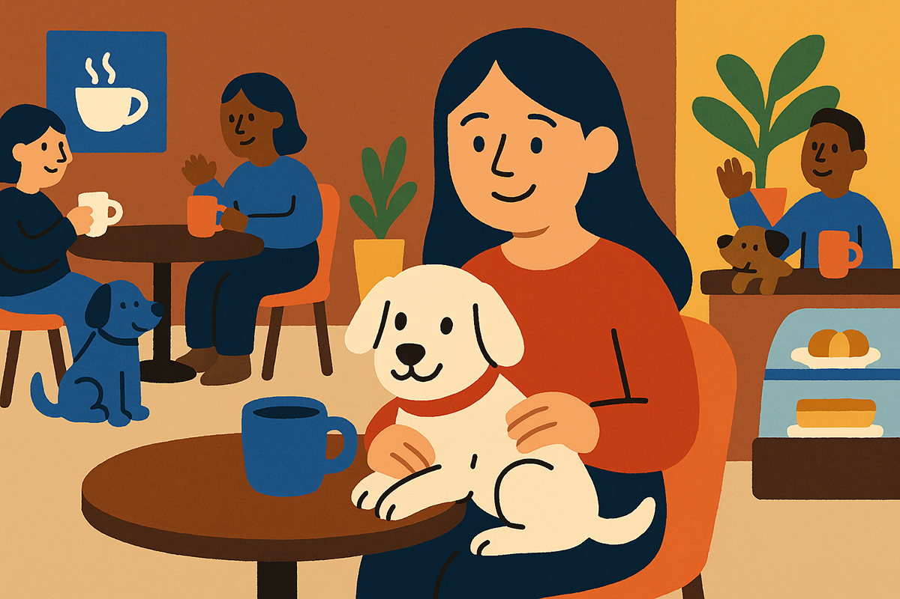

Menos guaguas, más perrhijos
Del baby boom al boom pet-friendly
Del baby boom al boom pet-friendly

Hace unas décadas, lo normal era que tus papás a los 30 ya tuvieran dos hijos, una casa propia y hasta planes para un tercero. Hoy, a esa misma edad, tú tienes un perro llamado Rocky, una cuenta de Instagram de él con más seguidores que tú y una planta que lleva seis meses viva.
Este cambio no es casualidad. Tiene que ver con cómo el mundo, la economía y la cultura han cambiado nuestras decisiones más íntimas. Vamos por partes.
Hoy Japón enfrenta su mayor crisis demográfica en 125 años y el gobierno está pensando en sancionar fiscalmente a quienes no tengan hijos. ¿Por qué? No hay suficientes nacimientos para mantener la economía, las pensiones ni los servicios públicos. ¿Te suena familiar?
Chile no se queda atrás. Según datos del Instituto Nacional de Estadística (INE) de 2024:

La pregunta se repite en almuerzos familiares y siempre la respuesta es más evasiva: “¿Y para cuándo el hijo?” Pero, seamos honestos, hay razones de peso detrás de esta decisión y probablemente te identifiques con varias:
La pandemia aceleró este cambio, como en muchas otras cosas. En Chile, como en toda América Latina, las adopciones de mascotas se dispararon. Según DW y BBC Mundo, en muchos países ya existen más mascotas registradas que nacimientos. Y es que no hablo solo de tener un perrito o un gatito, sino de cuidarlo como un hijo.
Y bueno, son más baratos que tener un hijo, no hay que pagar colegio y ya son parte del estilo de vida: viajan con nosotros, nos acompañan a cafés y tienen su propia red social.

No todo es libre elección. Para muchas personas, tener hijos se volvió simplemente inviable.
La maternidad y paternidad dejaron de ser una especie de “meta” para convertirse en opción. Y las condiciones actuales hacen que, muchas veces, esa opción quede fuera del alcance.
Es así como adoptar un animal se transforma en una forma real, emocional y socialmente aceptada de crear familia.
Los impactos son reales y tienen efecto en todo ámbito, por ejemplo:
Por eso, y más, Japón está tan preocupado. Y por eso está volviendo a la palestra esta discusión en Chile.
En resumen, el baby boom ya es cosa del pasado. Hoy vivimos el boom de los perrhijos, de las plantas con nombre y de los departamentos sin cuna pero con caja de arena. Ojo, no significa “tener hijos vs tener mascotas”, sino un síntoma de algo mayor; es una respuesta social, económica y emocional al mundo actual.
Y tú, ¿eres más de guaguas o de perrhijos?
 Actualidad
ActualidadEl recordado programa noventero “Venga Conmigo” marcó a toda una generación en Chile. Su exitoso segmento “Corazones Service” se transformó…
 Actualidad
ActualidadHace aproximadamente 2 meses comenzamos con el cierre de lo que empezó en julio como el “Compariniverse”.
 Actualidad
ActualidadHace unos meses lanzamos Compariniverse: la primera campaña en Chile protagonizada por una celebridad completamente clonada con IA.